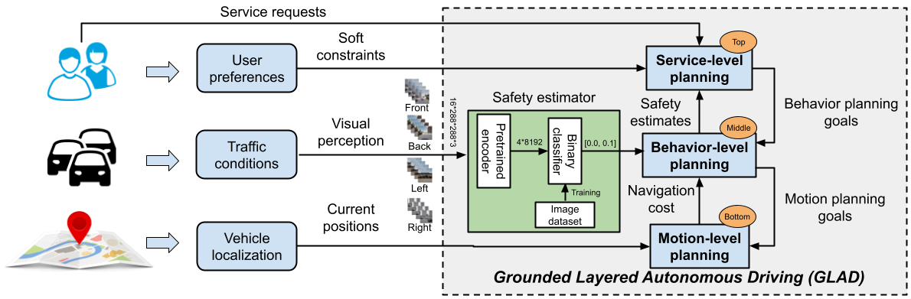
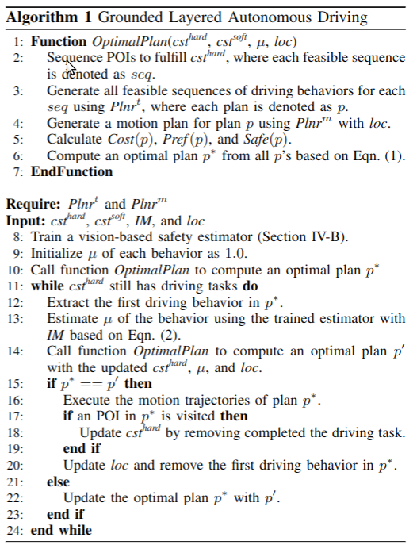
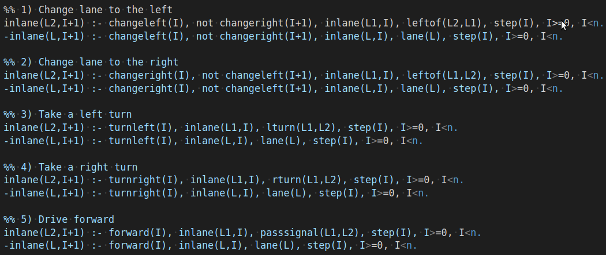
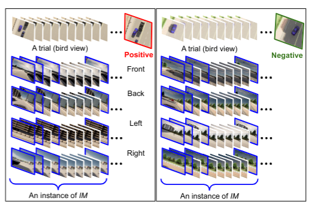
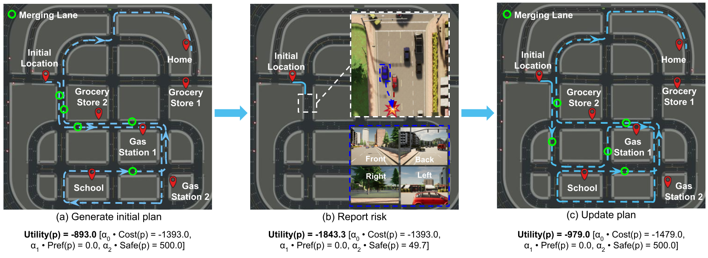

Yan Ding, Cheng Cui, Xiaohan Zhang, Shiqi Zhang
SUNY Binghamton
[Paper] [ASP] [Image Dataset] [Code]
Abstract
Given the current point-to-point navigation capabilities of autonomous vehicles, researchers are looking into complex service requests that require the vehicles to visit multiple points of interest.
In this paper, we develop a layered planning framework, called GLAD, for complex service requests in autonomous urban driving. There are three layers for service-level, behavior-level, and motion-level planning. The layered framework is unique in its tight coupling, where the different layers communicate user preferences, safety estimates, and motion costs for system optimization.
GLAD is visually grounded by perceptual learning from a dataset of 13.8k instances collected from driving behaviors. GLAD enables autonomous vehicles to efficiently and safely fulfill complex service requests. Experimental results from abstract and full simulation show that our system outperforms a few competitive baselines from the literature.
Framework
|  |
An overview of the GLAD planning framework for complex driving tasks in urban scenarios. GLAD consists of three decision-making layers about fulfilling service requests, sequencing driving behaviors, and computing motion trajectories respectively. GLAD is a visually grounded planning framework, because the safety levels of driving behaviors are evaluated using computer vision.
Algorithm
Algorithm 1 presents our GLAD algorithm – the main contribution of this work. More details can be found in the paper.
|  |
Task Planner implemented by ASP
Our task planner is implemented using ASP. The figure shows the definition of actions in the planner. More details can be found in the ASP code.
|  |
IM Dataset Collection
We built an image dataset to train the safety estimator, where the dataset contains 13.8k instances. Each instance is referred to as IM, which includes the 1st, 2nd, 4th, and 10th frames, as marked in blue box in the following figure. Right after taking an IM, the vehicle was forced to merge left (or right) using a predefined motion trajectory. In each trial, the vehicle was given ten seconds to complete the behavior. By the end of the ten seconds, the IM was labeled positive, if there was a collision with a surrounding vehicle, or there existed another vehicle that was very close to our vehicle (the threshold was 1.0 meter). Otherwise, the instance was labeled negative.
The figure shows two instances (positive on the left, and negative on the right), where we also present bird views of the two trials. Our dataset is also well balanced, as 46.5% of instances are labeled positive, and the remaining ones are labeled negative. To ensure the diversity of driving scenarios, instances were sampled from 24 different roads. The dataset has been open-sourced, where the link for downloading and additional information are provided in the supplementary materials.
|  |
Illustration
|  |
An illustrative example of GLAD for grounded layered autonomous urban driving. The vehicle's service task was to take Emma home after work. On the way home, Emma needed to pick up kid from school, stop at a gas station, and visit a grocery store. To fulfill the service request, our vehicle needed to visit at least four POIs, including School, Grocery Store, Gas Station, and Home.
(a) GLAD computed a task-motion plan as shown in blue dashed line, where at the service level the vehicle planned to visit the following POIs in order: Gas Station 1, School, Grocery Store 2, and Home. All POIs are marked with red pins. The planned “merge lane” positions are marked with green circles.
(b) Our vehicle (a blue car) was preparing to merge left in the highlighted area, and observed that there was a red car making it unsafe to merge left.
(c) Based on the computed safety value, GLAD generated a new task-motion plan that helped avoid merging lane in the highlighted area. Although the new plan required a longer traveling distance, it significantly improved driving safety, while considering user preferences. Following the updated plan, the vehicle was able to fulfill the service request.
Experiment Results

|
Performance of safety estimators SE-ANN and SE-SVM under two training settings: Default (Top), and Non-default (Bottom). x-axis represents the percentage of DTrain used in training, and y-axis represents the F1-score.

|
Overall performances of GLAD and three baselines, where the x-axis represents different methods, and the y-axis represents the average utility value. We also reported the standard deviations on top of each bar.